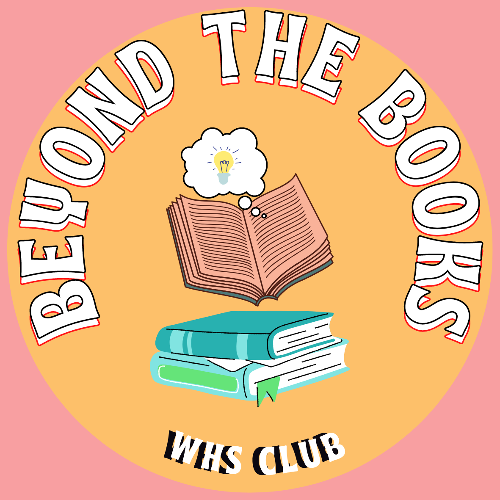
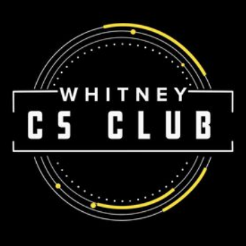
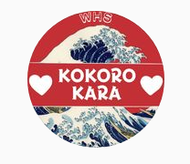
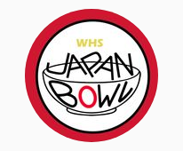

Clubs
Beyond the Books: President
Beyond the Books is a book club with the goal of facilitating in-depth conversation on a variety of books. It helps students learn about their peers and teachers through discussion that forge new bonds. We hold book drives to share the power of reading to those in need (ie. 2022 Drive at Casa Homeless Shelter).
-------------------------------------------------------------------------------------------------
Contact Us: whs_beyondthebooks@myabcusd.org

Computer Science Club: Director of Outreach
Computer Science club aims to bring the gift of coding to people all over our school We cater to the new members, teaching them the basics of various programming languages. We also hava code squad for those with previous experience, to compete at competitions like USACO. As Director of Outreach I contact different colleges, guest speakers, and companies to give talks at our school. This helps our members learn more about the inner workings of the field.
-------------------------------------------------------------------------------------------------
Contact Us: @whitney.cs.club

Kokorokara (Japanese Club): Secretary
Kokorokara, or from the heart in Japanese, is a club that aims to spread Japanese culture to campus. We prepare several performances (ie. Talent Show about Japanese shogunates) and cultural presentations to complete this goal. We provide several on campus activities to immerse students in culture, like tea ceremony, caligraphy, and more! Japanese Quiz Bowl is a club that competes in questions about Japanese culture nationally and at a state level.
-------------------------------------------------------------------------------------------------
Contact Us: whs_kokorokara@myabcusd.org

JBOWL (Japanese Quiz Bowl): Secretary
------------------------------------------------------------------------------------------------
Contact Us: whs_jbowl@myabcusd.org